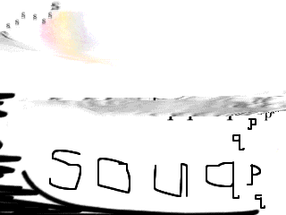
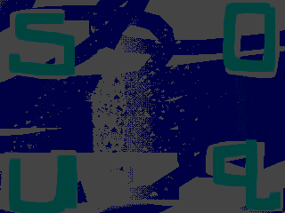
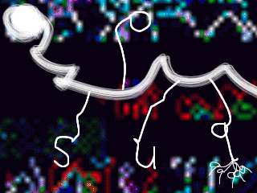
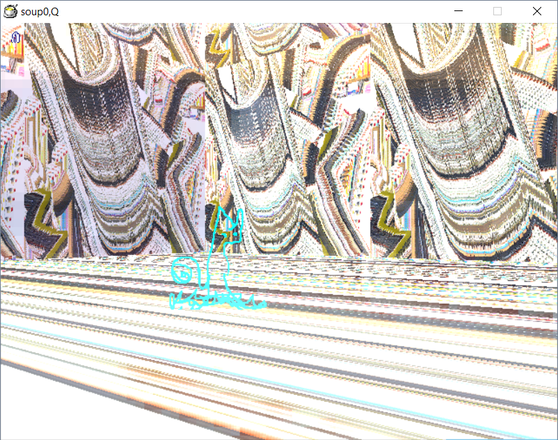
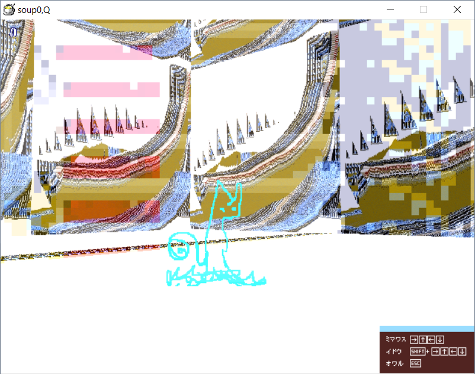
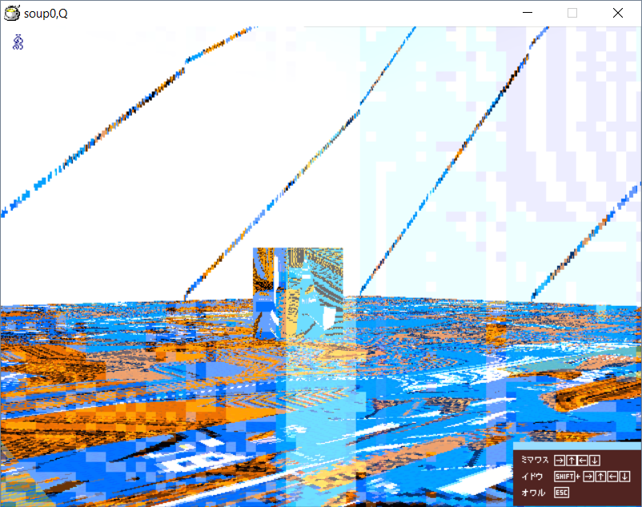
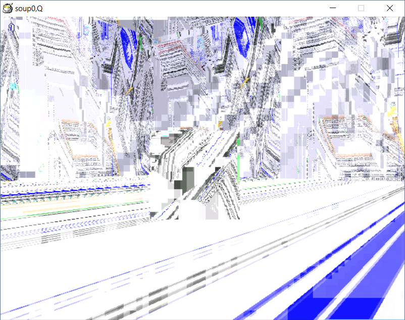

soupq is a mod for Soup 0.9, made by ijjjjjjjjjjjjjjjjjjjjjjj, who has contributed to the original game as well. It was released approximately in 2007/2008.
soupq is much more abstract and otherworldly compared to the original game, with pretty much all rooms having bizarre and surreal textures for the walls and the floor. The objects are largely absent aside from ruarooms 4, 8 and 9.
The rooms' internal names are set as ruaroom with numbers 4 and onward, seemingly continuing from the Birthday Room/ruaroom3. The music naming is similar, continuing from rua03 as rua04 and onward.
The mod's Title Screen skips the faucet part from the original game and instantly shows Soup 0.9's title cards. Other than that, the title cards themselves and the Oyasuminasai Screen are left untouched.
Below is a video of the creator (ijjjjjjjjjjjjjjjjjjjjjjj) playing soupq.
souqqqqqq is the second mod for Soup 0.9 made by ijjjjjjjjjjjjjjjjjjjjjjj. This one was released approximately in 2009.
Like it's predecessor, souqqqqqq leans more towards abstract imagery, however in a slightly different way than soupq.
Unlike soupq, souqqqqqq has objects in all of it's rooms, although they are all patterns related to the wall and floor textures of the room they are in. A notable exception to this is the cyan squirel, which appeared in a room in soupq and in all of the Day 1 rooms in souqqqqqq.
The internal names of the rooms and music are now strings of various letters, numbers and other symbols.
souqqqqqq also skips the faucet part of the original game's Title Screen, however now it has 3 out of 4 unique title cards. The Oyasuminasai Screen is once again left untouched.
Below are the 3 unique title screens variations.
  Currently there don't seem to be any gameplay videos of souqqqqqq.
   Both of the mods can be downloaded here, noteworthy thing is that the upper picture is the download for souqqqqqq, while the bottom picture is the download for soupq.